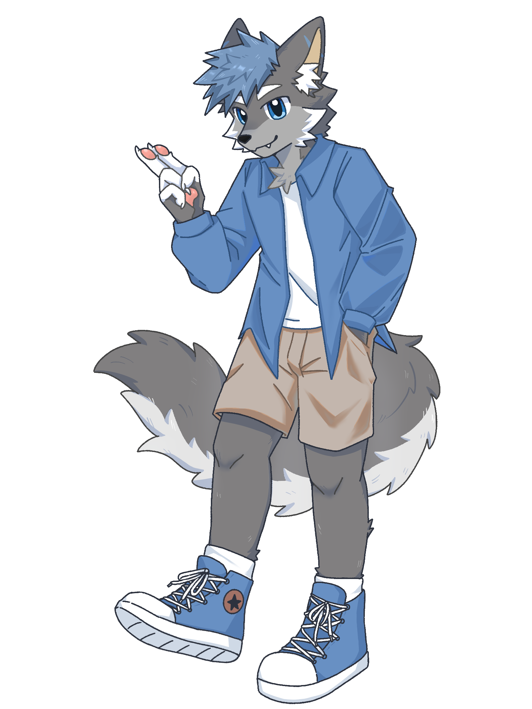
Tito / 头头
灰蓝狼，Tito's Cafe 店长。适合做首页主视觉、立牌和品牌徽章。
Characters
角色页把设定图放在最前面：先看形体、颜色和性格，再进入适合的周边分类。

灰蓝狼，Tito's Cafe 店长。适合做首页主视觉、立牌和品牌徽章。
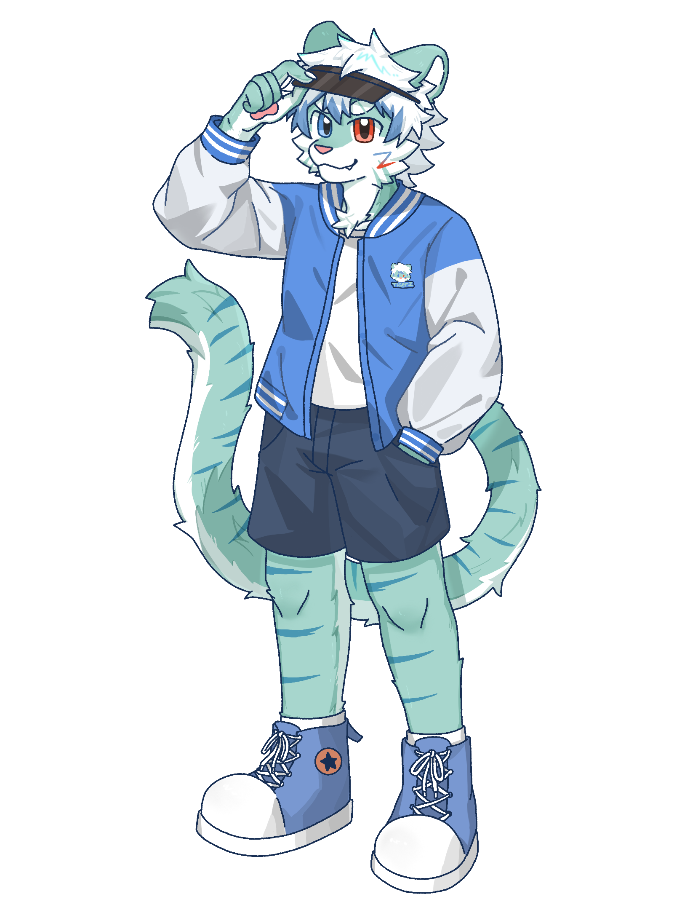
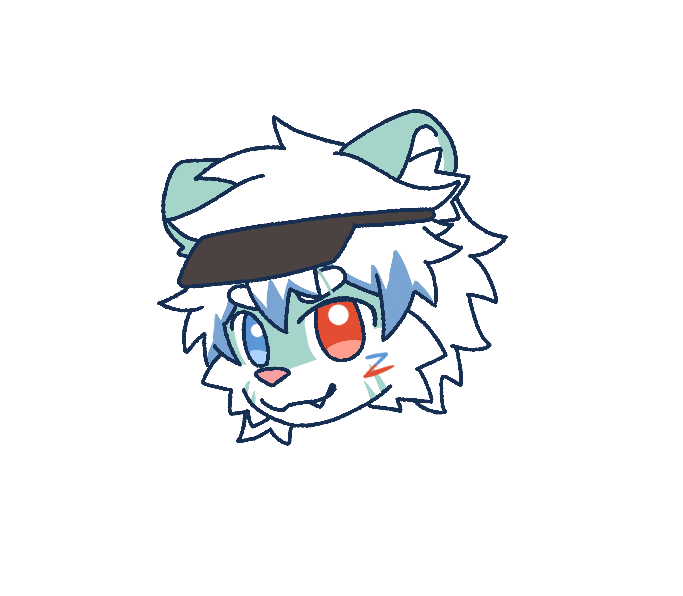
浅蓝老虎角色。视觉轻快，和游戏吉祥物 TigerBoo 形成一组。
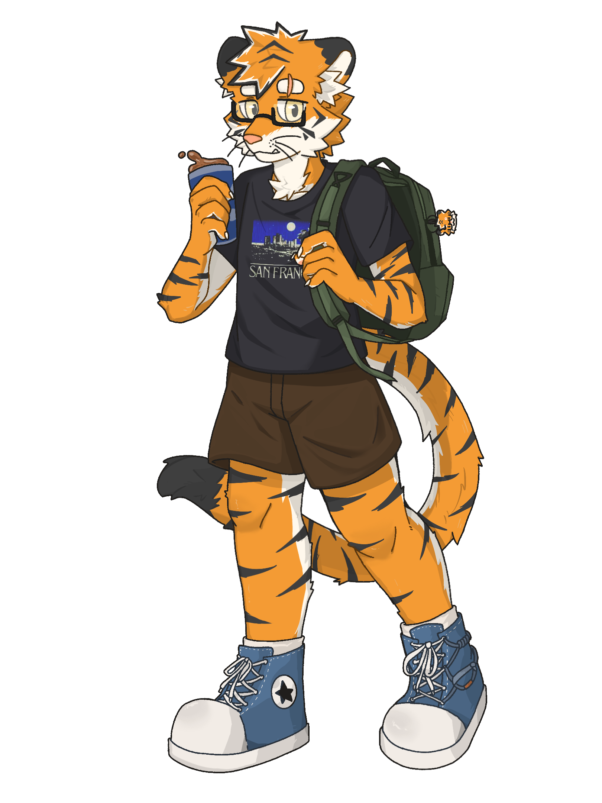
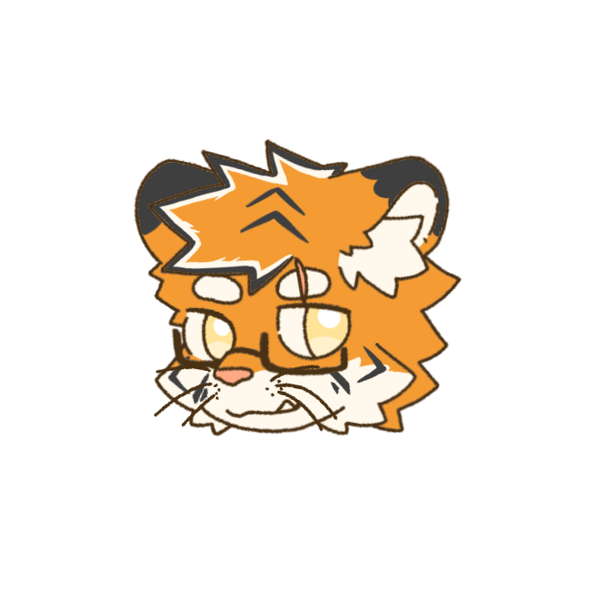
橘色老虎角色。画画、吐槽和桌面贴纸都很适合他。
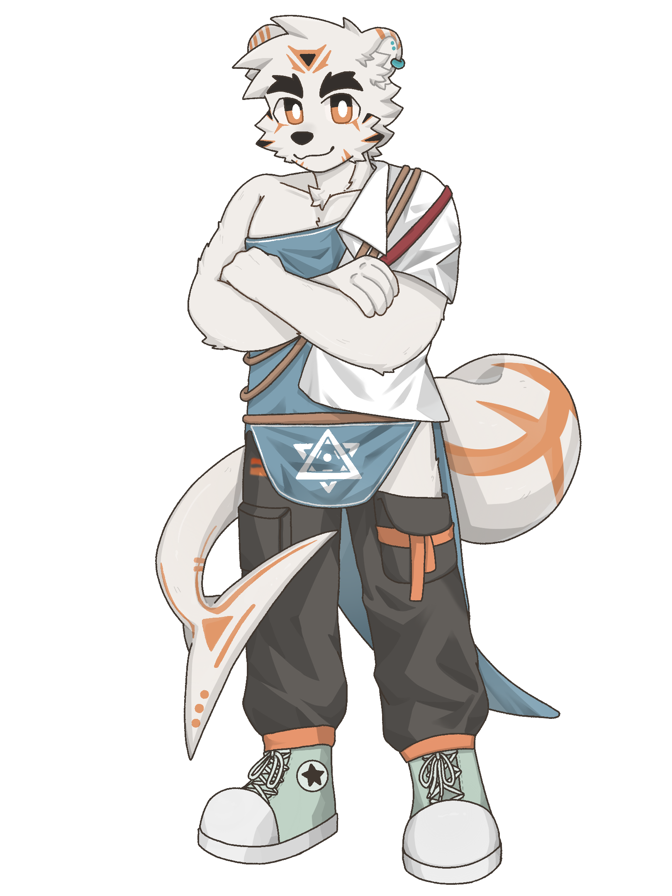
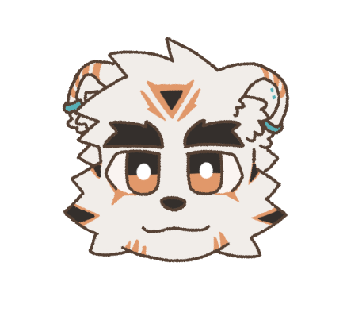
白色熊角色。温柔、柔软，适合慢节奏的贴纸和明信片。
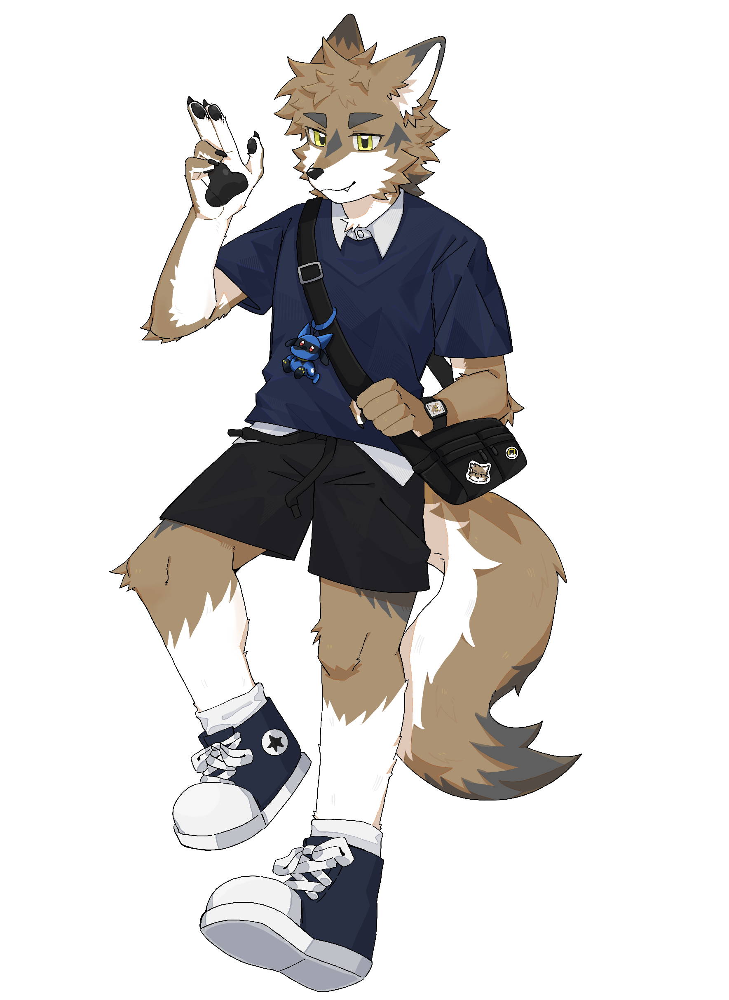
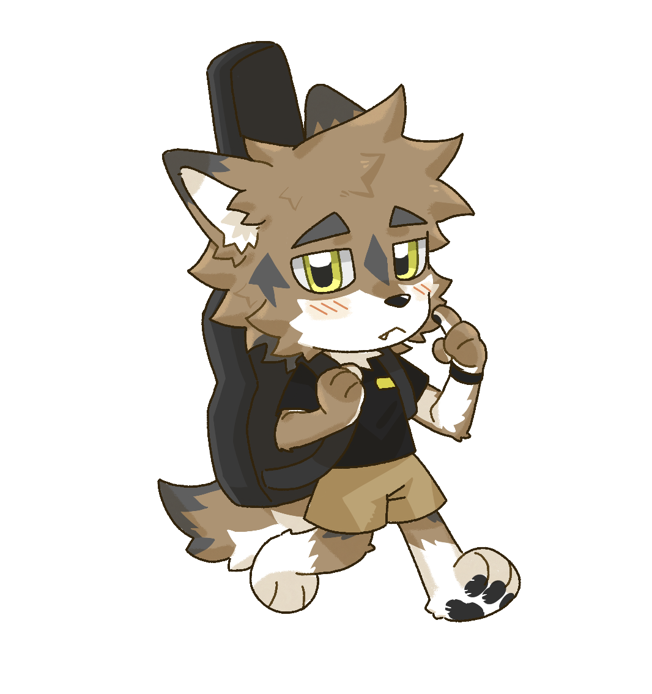
茶色狼角色。吉他、散步、点点，是更安静的故事线。
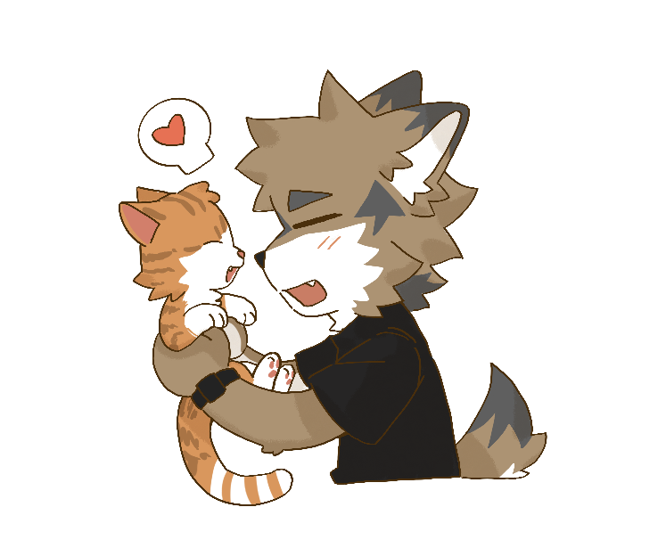
TON 的宠物猫。适合作为小尺寸贴纸、隐藏款和购物车小彩蛋。
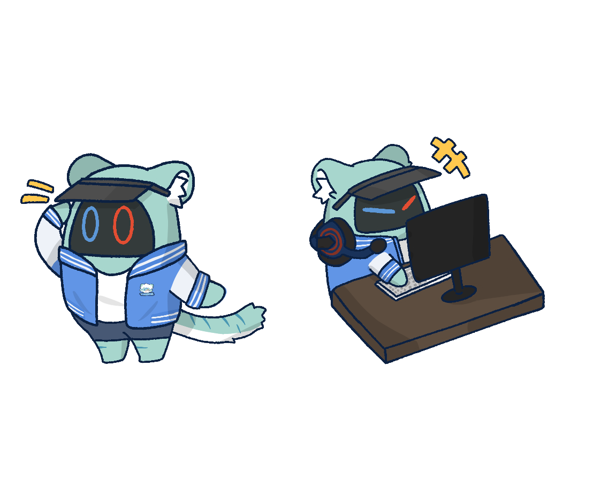
TigerZ 的游戏内吉祥物角色拟设。适合做成徽章、贴纸和活动角标。
Character Flow
周边站最容易变成一堆图和价格。这里把角色、设定、商品放成连续动线，让第一次来的人也能很快找到喜欢的角色。
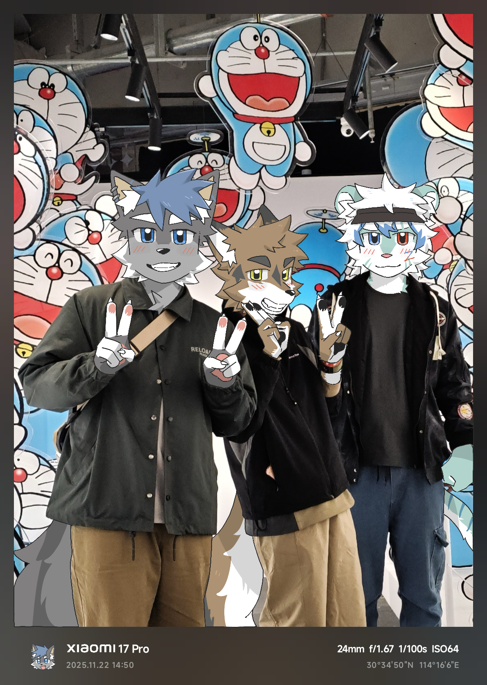